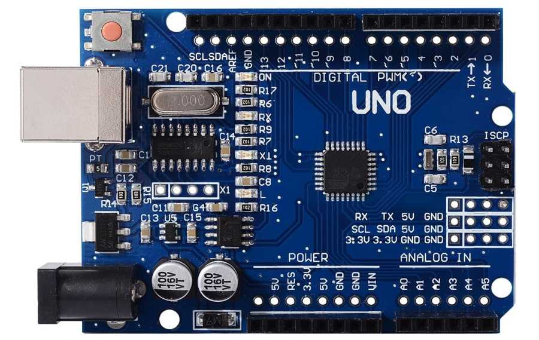
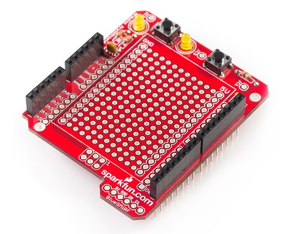
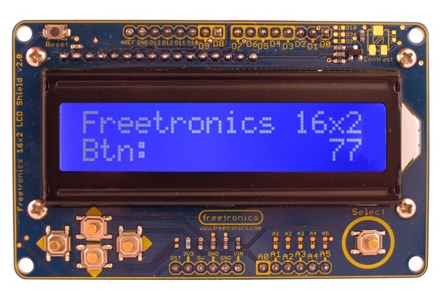
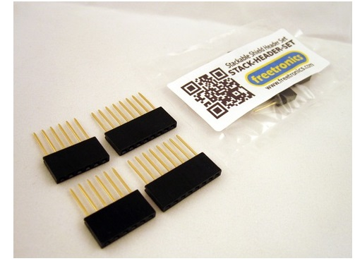
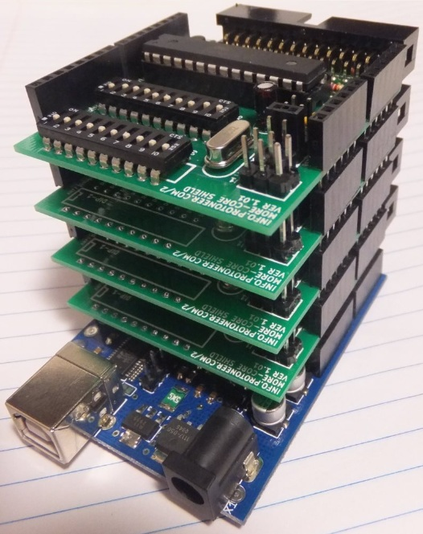
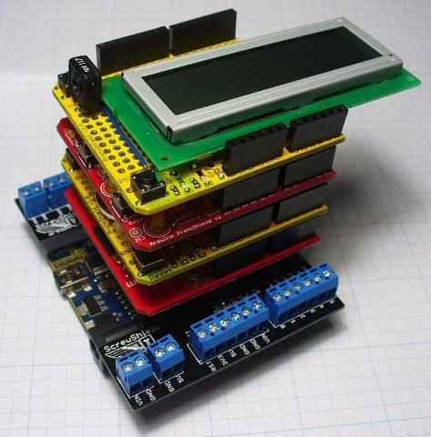

| ARDUINOS |
The Arduino comes in such a wide variety of models that we can only stock the most common ones such as the UNO:

Arduino Hardware at main Italian site
most Arduino sensors now come on a small breakout board for use on a breadboard, individual sensors can also be used on a breadboard and then connected to the Arduino
DHT11 & DHT22 Sensors Temperature and Humidity Tutorial using Arduino
a prototyping shield can also be used, such as the Sparkfun prototyping shield:

and an LCD & keypad shield:

I2C is a protocol that can be use to connect an LCD to the Arduino
shields are connected to the Arduino using stackable header pins:

In theory any number of shields can be stacked on to the Arduino, but amount of current drawn (especially if USB powered), speed reductions due to
capacitive load etc.
will give a practical limit; this article gives more information
on stacking
 |  |